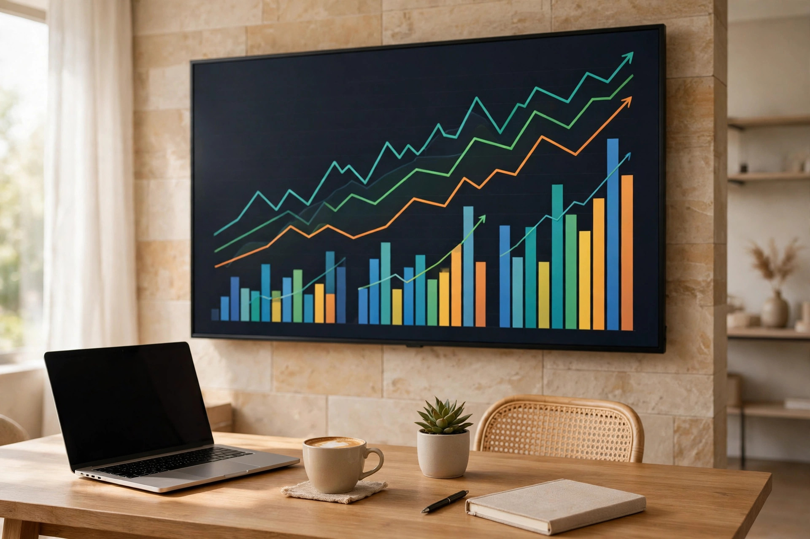
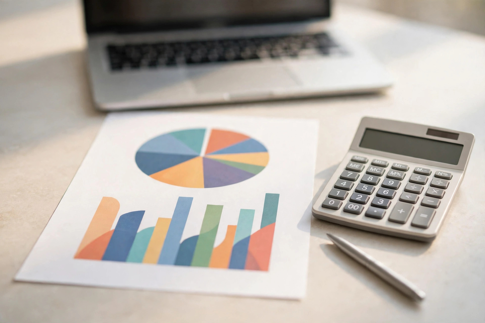

One question, answered with numbers: "If I spend $10,000 a month on SEO and ads, what do I get back - and which channel actually brings the customers?" This page is the model we run for a client, shown on a sample store.

Sample business: Aurora Living - a fictional cross-border standalone store selling smart home lighting. Average order value $85, gross margin 55%. Monthly budget $10,000 split across three channels. Every figure on this page is sample data, included to show the format and the reasoning.
| Channel | Spend / mo | Traffic | Conv. rate | Orders | Revenue | Gross profit | Contribution | ROAS | CAC |
|---|---|---|---|---|---|---|---|---|---|
| SEO (organic) | $4,000 | 12,000 sessions | 2.2% | 264 | $22,440 | $12,342 | +$8,342 | 5.61x | $15.15 |
| Google Ads | $4,000 | 3,333 clicks @ $1.20 CPC | 2.8% | 93 | $7,905 | $4,348 | +$348 | 1.98x | $43.01 |
| Social (Meta) | $2,000 | 3,077 clicks @ $0.65 CPC | 1.6% | 49 | $4,165 | $2,291 | +$291 | 2.08x | $40.82 |
| Blended | $10,000 | - | - | 406 | $34,510 | $18,981 | +$8,981 | 3.45x | $24.63 |
Read it this way: SEO is the profit engine once it matures, but it is not instant - organic traffic ramps over months. Google Ads buys customers today at a high cost per customer. Social is the discovery channel: cheap clicks, low direct conversion, but it starts journeys that other channels finish. None of that is visible if you only look at last-click revenue.
One order rarely comes from one click. A typical sample journey looks like this:
Last-click gives all $85 to Google Ads. That is wrong, and it is how budgets get misallocated. Here is the same $34,510 of monthly revenue attributed four ways, from a sample of 1,000 tracked customer journeys:
| Attribution model | Rule | SEO | Google Ads | Social |
|---|---|---|---|---|
| Last-click | 100% to the final touch | $22,440 (65%) | $7,905 (23%) | $4,165 (12%) |
| First-click | 100% to the first touch | $12,078 (35%) | $10,353 (30%) | $12,079 (35%) |
| Linear | Split evenly across touches | $15,529 (45%) | $10,353 (30%) | $8,628 (25%) |
| Position-based (40-20-40) | 40% first, 40% last, 20% middle | $17,255 (50%) | $8,628 (25%) | $8,627 (25%) |
Bars scaled to the highest value in the chart (Social first-click 6.04x). All figures sample data.
ROAS alone does not answer "will this make me money". These six numbers together do. Steady-state month, blended across channels.
SEO does not pay on day one. Organic orders ramp 15% - 42% - 72% - 100% of steady state while the $4,000 monthly SEO cost is fixed. The curve below is the whole program's cumulative contribution; it crosses zero between month 1 and month 2.
Cumulative contribution: M1 -$1,491, M2 +$337, M3 +$5,859, M4 +$14,840, M5 +$23,821, M6 +$32,802. All figures sample data.
Same store, same sample rates, different budget allocations. Steady-state month.
| Scenario | Spend | Orders | Revenue | Contribution | ROAS | CAC | Payback |
|---|---|---|---|---|---|---|---|
| SEO only | $4,000 | 264 | $22,440 | +$8,342 | 5.61x | $15.15 | Month 3 |
| Google Ads only | $4,000 | 93 | $7,905 | +$348 | 1.98x | $43.01 | Month 1 |
| Social only | $2,000 | 49 | $4,165 | +$291 | 2.08x | $40.82 | Month 1 |
| Ads + Social only | $6,000 | 142 | $12,070 | +$639 | 2.01x | $42.25 | Month 1 |
| Blended (recommended) | $10,000 | 406 | $34,510 | +$8,981 | 3.45x | $24.63 | Month 2 |
Ads alone barely breaks even on first-order profit. SEO alone is the most profitable but takes three months to pay back and produces nothing in month one. The blend is the point: ads and social keep revenue coming while SEO compounds, and the blended CAC of $24.63 is less than half the ads-only CAC.
One lever at a time, from the blended baseline (contribution $8,981, ROAS 3.45x, CAC $24.63).
| Change one lever | Contribution | Change | ROAS | CAC |
|---|---|---|---|---|
| Conversion rate +10% (all channels) | $10,879 | +21% | 3.80x | $22.39 |
| Average order value $85 to $95 | $11,214 | +25% | 3.86x | $24.63 |
| Ad CPC -10% (Ads + Social) | $9,775 | +9% | 3.60x | $23.64 |
| Gross margin 55% to 50% | $7,255 | -19% | 3.45x | $24.63 |
The most valuable work is not cheaper clicks. It is conversion rate and average order value: a 10% lift in conversion is worth more than a 10% cut in CPC, and a $10 higher order value is worth the most of all. That is why the monthly work prioritises landing pages, bundles and checkout before it chases cheaper traffic.
Move the sliders and the model recomputes on the sample scenario. Nothing you enter is saved or sent anywhere - this demonstrates the model; a live engagement runs it on the client's real data and we interpret the results.
Model assumptions (sample): Ads CR 2.8%, Social CPC $0.65 and CR 1.6%, SEO 3 sessions per $1 spent at 2.2% CR, repeat purchase 28% at $72 AOV. Payback uses the SEO ramp 15% - 42% - 72% - 100%.
This is not a one-off calculation. For a live engagement, the same model is re-run monthly on the client's real data and delivered as a report like this:

The owner never has to ask "did the $10,000 work". The report answers it on page one, every month.